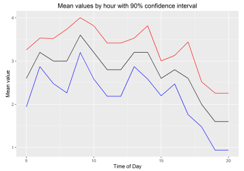
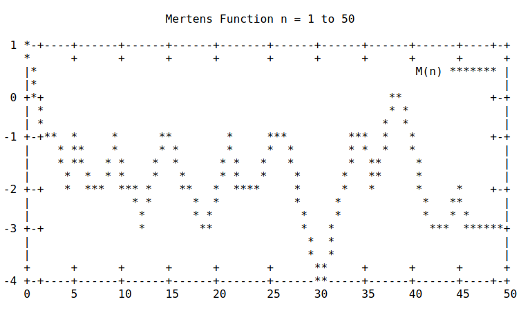
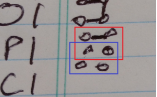
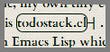
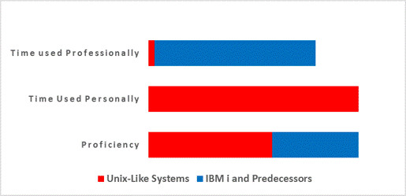
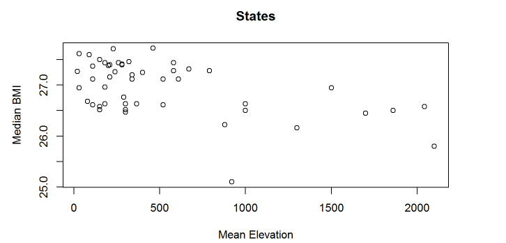

(Also: Resume | Github | vCard | LinkedIn)
Do “ultradian” rhythms mediate my productivity throughout the day? — A quick analysis in Rmarkdown. (Local, 2018.1)
Sound-pressure level at a large datacenter — One ought to wear earplugs in a noisy datacenter. Rmarkdown (Local, 2018.2)
A simulator from scratch in Common Lisp for some of IBM’s AJS job scheduler that I actually used for validating schedules on production machines. (Github, 2013)
A little eBay auction simulator, auctions.py that was a first stab at using simpy.
Playing with The Möbius Function in bash — A little visualization of the Möbius function and related things, using Bash and Awk, mainly. (Local, 2018.4)
Number Chunking with Chunky Numbers — A slightly tongue-in-cheek analysis of how to chunk multi-digit numbers when writing them down. Inspired by a true story (LinkedIn, 2018.03)
Set Operations with Bash — A demonstration tutorial thingie. (Local, 2018.4)
Tally Systems for Hand Collection of Data — Wherein is suggested a novel (I assume) method of making hand tally marks for collection of count data. (LinkedIn, 2018.03.23)
Using Split-Screen mode in Android Nougat for Quicker Data Entry — A quick how-to. (LinkedIn, 2018.03.03)
Cartouche Links With CSS — Make links with CSS that look a little like ancient Egyptian cartouches. Because you can. (Blogspot, originally on evanswinner.com, 2012)
seu-refcard — A cheatsheet (not written by me) re-coded in Emacs’ org-mode format and converted to PDF for IBM’s SEU editor used on the IBM i (neé AS/400 or iSeries). (Github, 2014)
Helping Papa Gump Find a Name for his Son With Common Lisp — A rather irreverent example of using the Common Lisp permutations function from the Alexandria library (Blogspot, orig. 2013)
Why Your Systems People Need a Sandbox — System administrators learn by doing. Give them a place to do it. Opinion piece. (LinkedIn, 2016.06.14)
One Space or Two — In which is answered that age-old and ever-so crucial question: One or two spaces between sentences? (Blotspot, orig. 2013)
 Kallychore — Plain-text code notebook processor for mixing text and bash code, a little like Rmarkdown mixes Markdown and R. Bash with embedded awk. (Github, 2018)
Kallychore — Plain-text code notebook processor for mixing text and bash code, a little like Rmarkdown mixes Markdown and R. Bash with embedded awk. (Github, 2018)
whatver — Python program to get the version number for any program… if you’ve told it how in advance. Well, no free lunch and all that. (Github, 2018)
Demanding Satisfaction in Emacs Lisp — A function for .emacs files to require a library, but if that doesn’t work, to automatically try to download and install it from the package archives. (2018.4)
Todostack.el — A to-do list as a stack, written in Emacs Lisp. (Github, 2011). Some description on Blogspot.
Propforth Pomodoro — A pomodoro timer using nothing but the lights on the Parallax Propeller P8X32A QuickStart microcontroller, written in 29 lines of the Propeller’s Forth dialect. (2014)
Load a Directory of Emacs Lisp Files — Rather out of date now, but included for the sake of inclusiveness. (Blogspot, Orig. Date ca. 2011)
Exploring the BRFSS Data — Final project from a Coursera basic stats course on exploratory data analysis in which is determined that 1) having kids makes you lose sleep, 2) Mondays don’t really suck, and 3) Colorado really is the healthiest state. Well, more or less. Rmarkdown (Local, 2016)